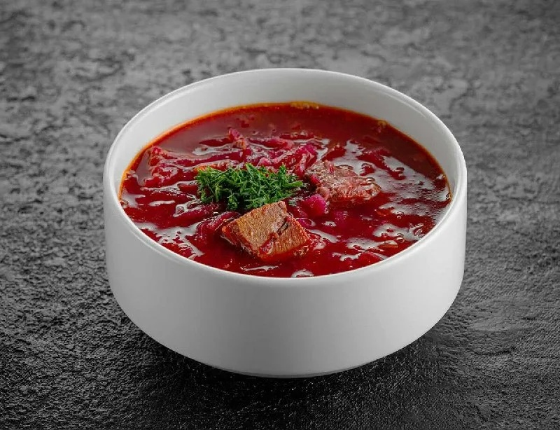

БОРЩ УКРАИНСКИЙ
Куриное филе, морковь, лук, картофель, свекла
Традиционный суп на основе сахарной косточки с добавлением молодой капусты и ароматных специй.
Не много о кулинарии
Вкусные рецептики и не только

Куриное филе, морковь, лук, картофель, свекла
Традиционный суп на основе сахарной косточки с добавлением молодой капусты и ароматных специй.
Куриное филе, морковь, лук, картофель, свекла
Традиционный суп на основе сахарной косточки с добавлением молодой капусты и ароматных специй.